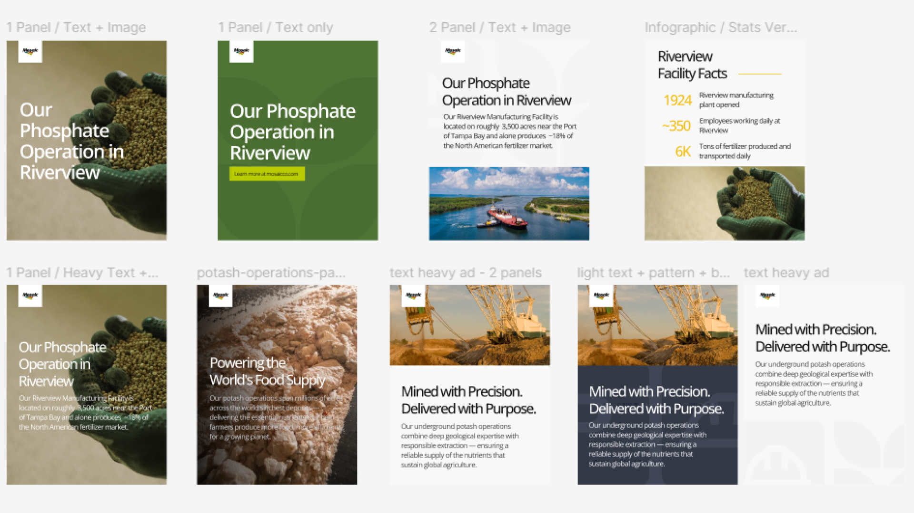
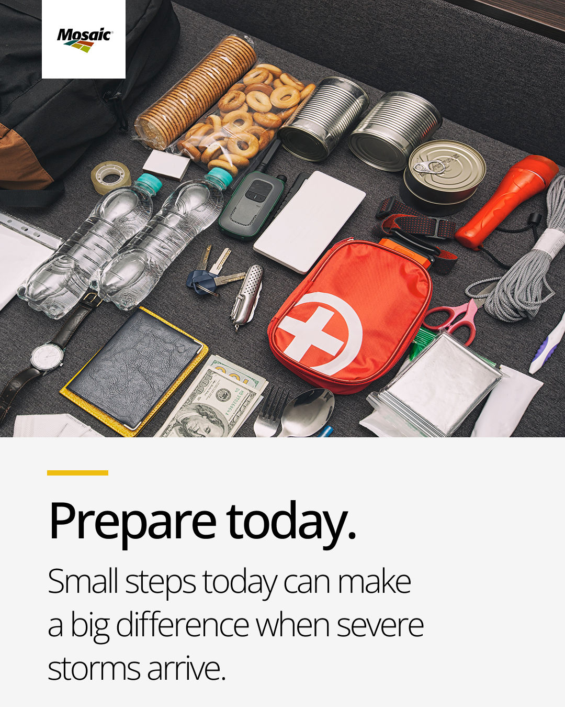
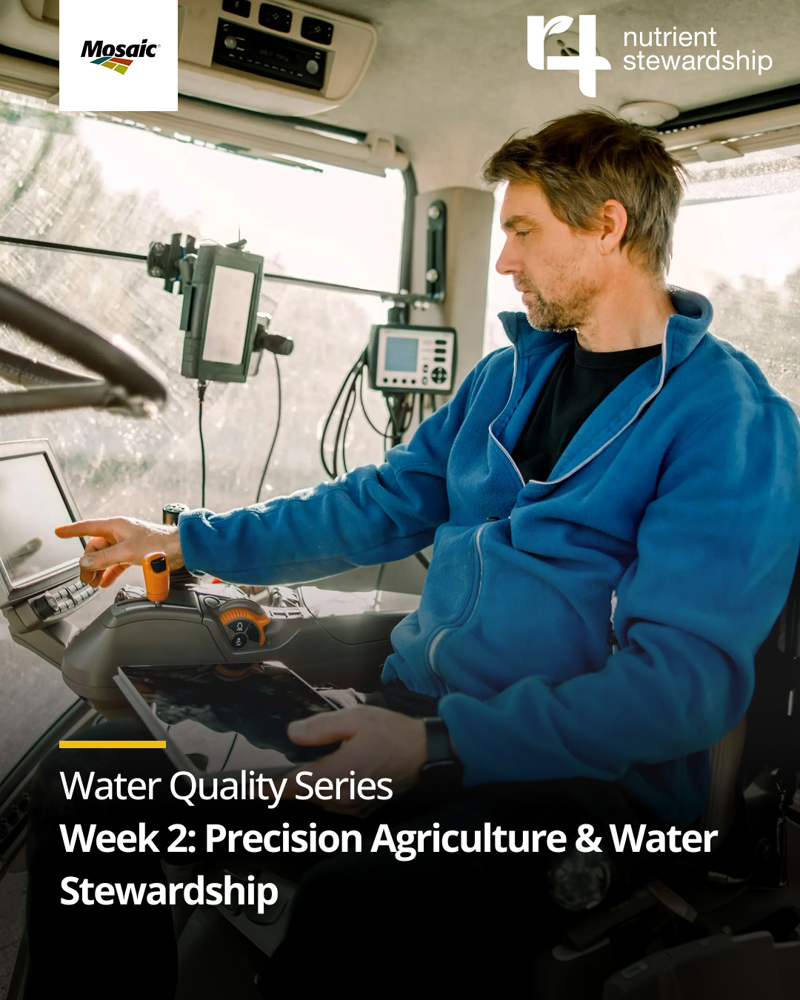

Figma Weave
AI Workflow
Producing a single social asset at Mosaic meant sourcing imagery, drafting copy, looping in collaborators, and manually applying brand rules — a process that averaged 2 days per post for what should be routine output. With a recurring social calendar and a lean team, that bottleneck wasn't sustainable.
Built a Figma Weave AI pipeline that takes a social calendar brief as input and outputs production-ready, on-brand assets — no manual image sourcing, no copy pass, no back-and-forth. The system handles categorization, brand application, and layout generation end-to-end.
The brief gets ingested and converted into structured JSON — headline, body copy, and CTA — then automatically categorized by post type: community investment, operations, recruiting, sustainability, and more. Each category maps to a pre-defined background treatment so the system knows which visual direction to apply without any manual input.

The pipeline was trained on Mosaic's brand guidelines, approved typography, color system, and a curated library of reference assets. Every output stays on-brand without a manual review pass — the system enforces the rules so I don't have to.

Generated assets across post categories — each one brand-compliant and production-ready, no manual intervention.


Asset turnaround dropped from 2 days to 4 hours — built and maintained solo. Time recovered went back into higher-priority design work instead of repetitive production cycles.